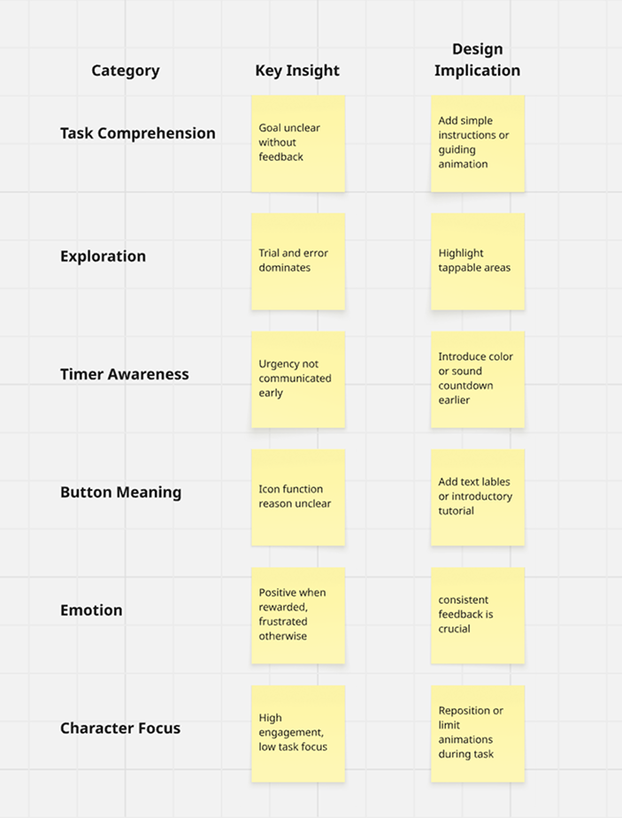
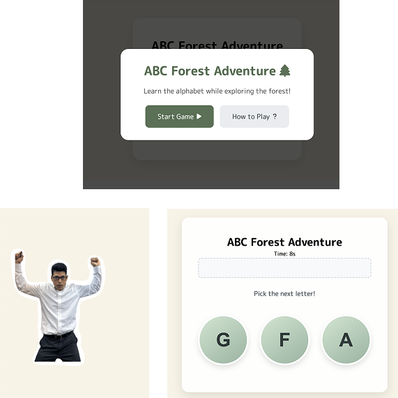

Task Understanding
Observe how quickly students understood the task without explanation.
The Unofficial English Learning Site
The aim of this observational usability test was to understand how second grade Japanese students naturally interact with the English alphabet puzzle game. Specifically, the goals were to:
Observe how quickly students understood the task without explanation.
Evaluating if the redesign made the task more approachable and less stressful.
Creating a character that users can connect to emotionally.
Identifying whether visual and instructional simplifications improved comprehension.
I want to provide children a fun and engaging way to learn the English alphabet other than just providing them worksheets to work on.

We didn’t want to give the kids instructions at first. We just wanted them to play the game and simply see how they react. So there wasn’t an explanation about the timer, letters, or controls. This is what the prototype looked like:
The common feedback from observing were made into key insights and a design implication that could solve user frustrations.
Based on the results and feedback gathered from the usability test, I made several adjustments to the design. These iterations aimed to enhance usability and improve user experience by addressing specific pain points identified during testing.
The current status of the game is more clear with its goal and instructions. Feels calm, simple, and focused. It’s more age appropriate and intuitive.
Give the game a try and see how fun learning can be!
In the future, I would like to further test the current version of the game. I would add audio feedback and have the character be more involved in reactions, but these are minor improvements. Overall, the redesign demonstrates effective child-centered design principles simple instructions, positive tone, and clear interaction. Resulting in a smoother and more enjoyable learning experience.